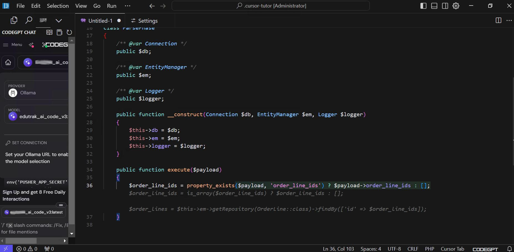
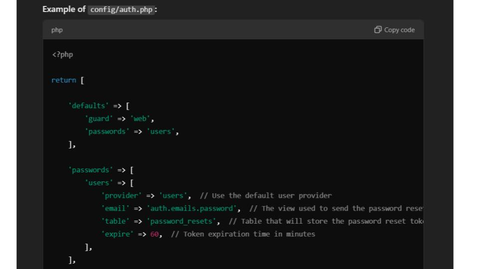
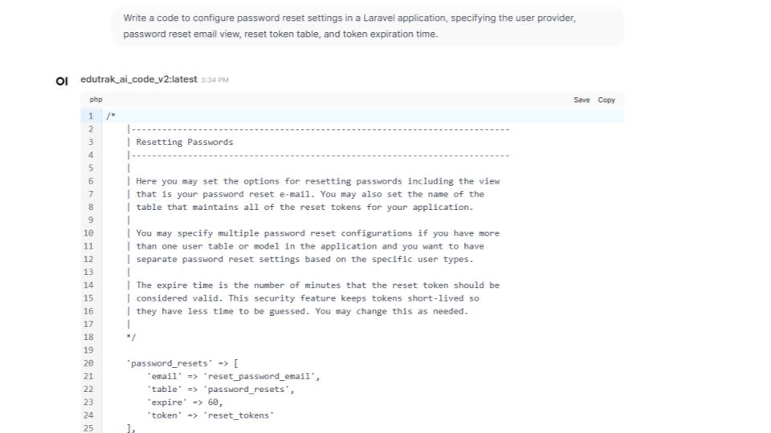
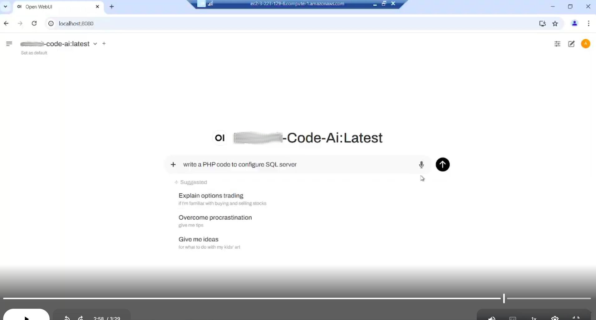

Knowledge Acquisition & Curation
Built a GitHub ingestion pipeline that pulls company repositories and transforms them into
structured, searchable knowledge optimized for accurate code assistant responses.
Data Sources:
GitHub repos (framework conventions, services, configs, recurring patterns)
Normalization:
Code context chunked by repo/module/service for digestible retrieval
Parsing Strategy:
Repository structure analysis, dependency mapping, pattern extraction
Boundaries Defined:
What can be answered, what requires verification, what should never be auto-generated (security-sensitive logic)
Custom Model Build & Evaluation
Developed a custom LLM behavior layer optimized for engineering outcomes rather than generic
conversational AI, with strict guardrails for security and consistency.
Model Tuning:
Fine-tuned LLM or instruction-tuned wrapper with retrieval grounding
Behavior Principles:
"Show working code + explain minimally", "Prefer internal patterns", "Consistent style/naming/error handling"
Task Routing:
Generate / refactor / debug / explain / recommend prompts
Test Coverage:
Authentication config, database integrations, API handlers, utilities, refactors, debugging scenarios
Knowledge Retrieval (RAG Architecture)
Implemented semantic search over the company codebase using embeddings and vector database,
enabling context-aware code suggestions grounded in actual internal implementations.
Embedding Pipeline:
Code chunks → vector embeddings → semantic search index
Vector Database:
pgvector / Pinecone / Weaviate (or equivalent) for similarity search
Context Assembly:
Strict token budgeting with relevancy scoring for optimal LLM input
Retrieval Strategy:
Query developer request → Find similar code patterns → Assemble context → Generate response
Cursor IDE Integration

Cursor IDE showing connected custom model (edutrak_ai_code_v3) with provider configuration and chat interface
Integrated the custom code assistant directly into Cursor IDE, enabling developers to access
company-specific code generation without leaving their development environment.
Integration Type:
Custom model connection via Ollama provider in Cursor
Features Available:
Inline code suggestions, chat panel, contextual assistance, file mentions
Model Access:
Direct connection to internal LLM endpoint with authentication
Developer Experience:
Seamless in-IDE workflow with company-aware code completion
Code Generation & Completion Modes

AI-generated Laravel configuration code showing password reset settings with proper structure and internal conventions
The assistant generates production-ready code following company patterns, complete with proper
documentation, error handling, and adherence to internal coding standards.
Output Format:
Working code with minimal explanation, patch-style answers, implementation steps
Code Quality:
Consistent naming, proper structure, inline documentation, framework-aligned patterns
Common Tasks:
Authentication config, database models, API routes, utility functions, test scaffolding
Context Awareness:
References existing internal implementations rather than generic examples
Interactive Chat Testing

Web chat interface demonstrating Q&A functionality with detailed code examples and explanations for developer queries
Built an interactive chat interface for testing model responses, developer Q&A, and exploring
codebase patterns without opening an IDE.
Use Cases:
Quick code questions, architectural guidance, pattern discovery, onboarding support
Response Style:
Code-first with explanations, references to internal repos, suggested next steps
Session Handling:
Conversation history, prompt templates, saved queries
Standalone Web Chat Interface

Open WebUI frontend providing accessible web-based chat interface with suggested prompts and voice input support
Deployed a standalone web application using Open WebUI, making the code assistant accessible
to all team members regardless of their IDE setup.
Frontend Stack:
Open WebUI (lightweight React/Next.js-based interface)
Features:
Chat history, model selection, prompt templates, voice input, code highlighting
Accessibility:
Browser-based access for non-IDE workflows, onboarding, documentation
Suggested Prompts:
Pre-built examples for common tasks (SQL config, options trading explanations, etc.)
Backend & API Infrastructure
Built scalable backend services to handle inference requests, authentication, logging,
and role-based access across multiple developer teams and repositories.
API Gateway:
Inference request handling with authentication and rate limiting
Telemetry:
Request logging, latency tracking, token usage monitoring, prompt category analysis
Security:
Role-based access to repos/modules, guardrails against insecure code generation
Quality Controls:
Detection of secrets, auth bypass patterns, "prefer internal examples" enforcement
Deployment & Continuous Improvement
Released early and iterated based on developer feedback, continuously improving answer quality,
reducing noise, and tuning the assistant toward practical coding assistance.
Release Strategy:
Internal beta → Team feedback → Iterative improvements → Production rollout
Improvements Made:
Better repo-specific answers, reduced completion noise, more "coding-first" approach
Feedback Loop:
Usage analytics, developer ratings, manual review of problematic outputs
Optimization Focus:
Speed of response, accuracy of suggestions, adherence to company patterns